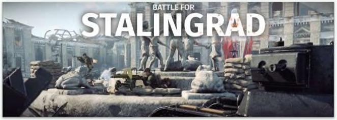

hủy hoại. Điều nguy hiểm là sự lạc quan che giấu khả năng bị hủy hoại. Kết quả là chúng ta đánh giá thấp rủi ro một cách có hệ thống. Giá nhà ở đã giảm 30% trong thập kỷ trước. Một số công ty vỡ nợ. Đó là chủ nghĩa tư bản. Nó xảy ra. Những người có tỷ lệ đòn bẩy cao bị xóa sổ kép: Họ không chỉ bị phá sản mà còn bị xóa bỏ mọi cơ hội quay trở lại trò chơi vào chính thời điểm cơ hội đã chín muôi. Một chủ nhà bị xóa sổ vào năm 2009 đã không có cơ hội tận dụng lãi suất thế chấp rẻ vào năm 2010. Lehman Brothers không có cơ hội đầu tư vào (ác khoản nợ rẻ trong năm 2009. Họ đã xong. Để giải quyết vấn đề này, tôi chấp nhận rủi ro với một phản và sợ hãi với phản còn lại. Điều này không phải là không nhất quán, nhưng tâm lý về tiền sẽ khiến bạn tin đúng như vậy. Tôi chỉ muốn đảm bảo có thể đứng vững đủ lâu để những rủi ro của tôi được đền đáp. Bạn phải sống sót trước khi thành công, Để nhắc lại một điểm mà chúng tôi đã đưa ra một vài lần trong cuốn sách này: Khả năng làm những gì bạn muốn, khi bạn muốn, có R0I (tỷ suất hoàn vốn) vô hạn. Dự phòng rủi ro không chỉ mở rộng mục tiêu xung quanh những gì bạn nghĩ có thể xảy ra. Nó cũng giúp bảo vệ bạn khỏi những điều bạn không bao giờ tưởng tượng được, đó có thể là những sự kiện rắc rối nhất mà chúng ta phải đối mặt. Trận Stalingrad trong Thế chiến lllà trận chiến lớn nhất trong lịch sử. Cùng với nó là những câu chuyện đáng kinh ngạc không kém về cách mọi người đối phó Với tỦi ï0. Vào cuối năm 1942, có một đơn vị xe tăng Đức dự bị đang năm trên cánh đồng cỏ bên ngoài thành phố. Khi những chiếc xe tăng đang rất cần trên tiền tuyến, một điều gì đó đã xảy ra khiến mọi người ngạc nhiên: Hâu như không chiếc 'ào hoạt động được. Trong số 104 xe tăng trong đơn vị, có ít hơn 20 chiếc có thể hoạt động. Các kỹ sư đã nhanh chóng tìm ra vấn đề. Nhà sử học William (raig viết: “Trong nhiều tuần không hoạt động ở phía sau chiến tuyến, chuột đồng đã làm tổ bên trong các phương tiện và án mất lớp cách điện bao phủ hệ thống điện”. Người Đức có những thiết bịtinh vi nhất trên thế giới. Tuy nhiên, họ đã bị đánh bại bởi những con chuột. Bạn có thể tưởng tượng ra sự hoài nghi của họ. Điều này gần như chắc chán không thể quên trong tâm trí của họ. Nhà thiết kế xe tăng nghĩ gì về việc bảo Yệ trước chuột? Những điều như vậy xảy ra mợi lúc. Bạn có thể lập kế hoạch cho mọi rủi r0 ngoại trừ những điều quá điên rồ không thể nghĩ tới. Và những điều điên rồ đó
